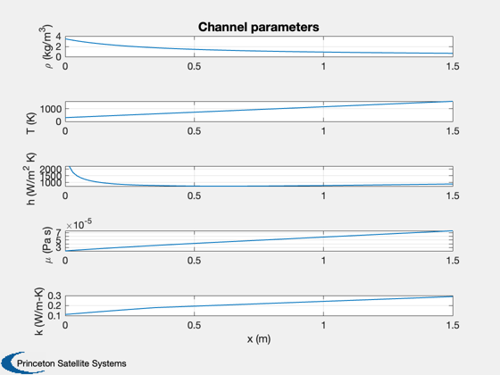
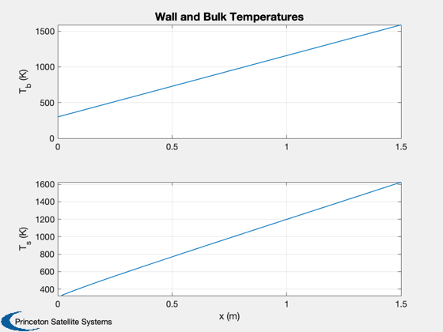
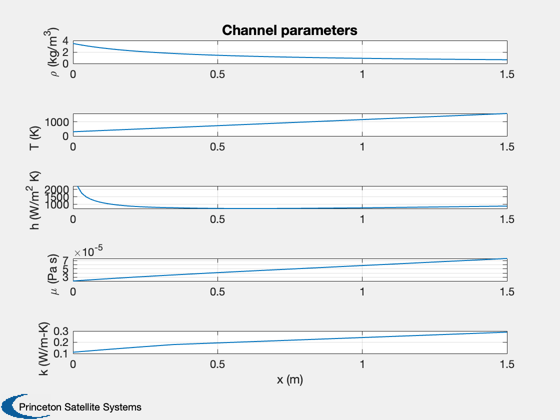
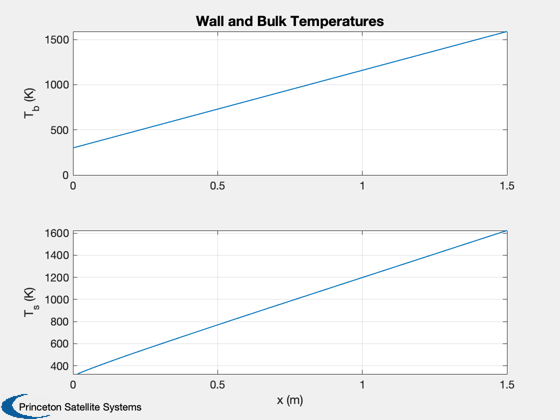
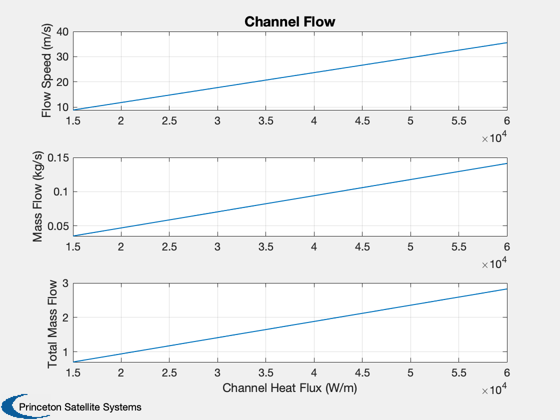

Contents
Size the channels for heat transfer with He/Xe
Create a set of circumferential channels around the heat source. Compute the flow rate to achieve the desired temperatures.
%-------------------------------------------------------------------------- % See also: HeatTransferChannel, Plot2D %-------------------------------------------------------------------------- %-------------------------------------------------------------------------- % Copyright (c) 2017 Princeton Satellite Systems, Inc. % All rights reserved. % 2023.1 Add to Thermal module %--------------------------------------------------------------------------
Inputs
Input heat, ex. from a ~1 MW power reactor
Q = 0.6e6; % W l = 1.5; % length of heat region, m r = 0.35; % radius of inner wall, m nChannels = 20; % how many ducts tIn = 300; % inlet (cold) temperature tOut = 1589; % out temperature, GE ceramic blades pR = 2; % inlet pressure, ATM gas = {'xe', 0.3, 'he', 0.7}; cP = 494; % 70/30 He/Xe, specific heat/pressure cV = 300; % 70/30 He/Xe, specific heat/volume
Calculate heat per channel
This assumes the flux is uniform around the channel perimeter.
c = 2*pi*r; % circumference w = c/nChannels; % channel width h = 0.5*w; % channel height q = Q/nChannels; % wall loading, W/m, per channel d = struct( 'name', 'Helium/Xenon 70/30',... 'length', l,... % m 'w', w,... % m 'h', h,... % m 'q', q,... % MW 'cP', cP,... % J/kg-K 'gamma', cP/cV,... % ratio 'kC', 0,... % 'kE', 0,... % 'tInlet', tIn,... % K 'tOutlet', tOut,... % K 'tube', 'square',... 'pressure', pR ); % ATM d.gas = gas; [out, ltx] = HeatTransferChannel( d, true ); k = size(ltx,1)+1; ltx{k,1} = 'Total $\dot{m}$'; ltx{k,2} = sprintf('%12.2e',nChannels*out.mDot); ltx{k,3} = 'kg/s'; fprintf(1,'\n\n'); DisplayLatexTable(ltx);
Gas Helium/Xenon 70/30
height 5.50 cm
width 11.00 cm
Q 3.00 W/cm$^2$
$C_p$ 494.00 J/kg-K
$\gamma$ 1.65
$T_i$ 300.00 K
$T_o$ 1589.00 K
$\dot{m}$ 0.07 kg/s
$\rho_o$ 3.48 kg/m$^3$
$\rho_i$ 0.66 kg/m$^3$
$a_c$ 60.45 cm$^2$
$u$ 17.78 m/s
q 30000.00 W/m
$\Delta P$ -4.89e-04 Atm
Tube square
Gas Helium/Xenon 70/30
height 5.50 cm
width 11.00 cm
Q 3.00 W/cm$^2$
$C_p$ 494.00 J/kg-K
$\gamma$ 1.65
$T_i$ 300.00 K
$T_o$ 1589.00 K
$\dot{m}$ 0.07 kg/s
$\rho_o$ 3.48 kg/m$^3$
$\rho_i$ 0.66 kg/m$^3$
$a_c$ 60.45 cm$^2$
$u$ 17.78 m/s
q 30000.00 W/m
$\Delta P$ -4.89e-04 Atm
Tube square
Total $\dot{m}$ 1.41e+00 kg/s
  
  Flow rate and pressure as a function of heat
Keep the channel size the same, how does the flow vary?
qs = linspace(0.5*q,2*q); for k = 1:length(qs) d.q = qs(k); out = HeatTransferChannel( d ); us(k) = out.u; mDots(k) = out.mDot; end Plot2D(qs,[us;mDots;nChannels*mDots],'Channel Heat Flux (W/m)',... {'Flow Speed (m/s)','Mass Flow (kg/s)','Total Mass Flow'},'Channel Flow') %-------------------------------------- % $Date$ % $Id: cffcbaf3293f10db28518607aaf89378963c795b $